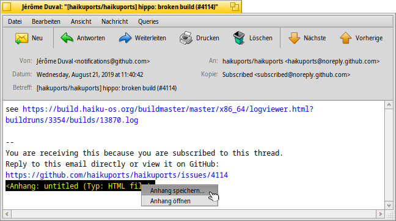
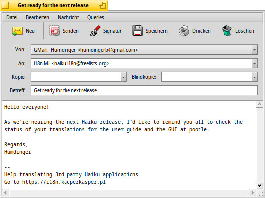
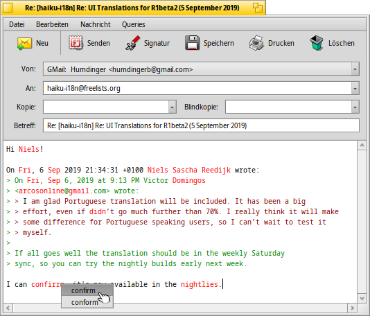
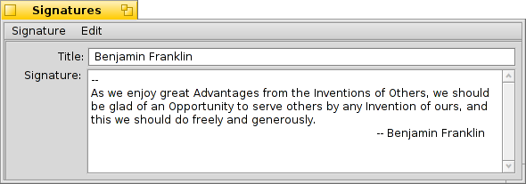
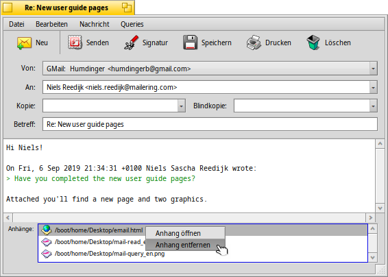
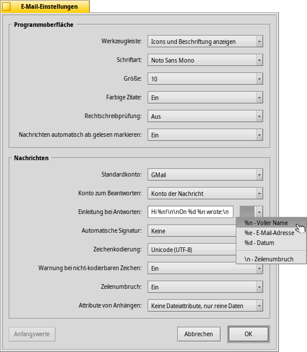

Deutsch
Deutsch Français
Français Italiano
Italiano Русский
Русский Español
Español Svenska
Svenska 日本語
日本語 Українська
Українська 中文 ［中文］
中文 ［中文］ Português
Português Suomi
Suomi Slovenčina
Slovenčina Magyar
Magyar Português (Brazil)
Português (Brazil) English
English| Index |
| E-mails lesen Neue E-mails verfassen Einstellungen |
 E-Mail
E-Mail
| Deskbar: | ||
| Ort: | /boot/System/apps/E-Mail | |
| Einstellungen: | ~/config/settings/Mail/ ~/config/settings/Mail/Menu Links/ - Objekte in diesem Ordner erscheinen im Kontextmenü der Mailbox in der Deskbar ~/config/settings/Mail/signatures/ - Speicherort von Signaturen ~/config/settings/Mail/status/ - Speicherort für eigene Status |
Mail ist Haikus Standardprogramm zum Lesen und Verfassen von E-mails. Mit dem eigentlichen Abrufen und Versenden hat Mail nichts zu tun. Das geschieht mit dem mail_daemon, der mit den E-mail Einstellungen konfiguriert wird.
Diese Seite gibt nur einen allgemeinen Überblick über die Anwendung Mail. Tips wie man mit E-mail unter Haiku umgeht, stehen im Workshop zur E-mail-Verwaltung.
 E-mails lesen
E-mails lesen
Ein Doppelklick öffnet eine E-mail-Datei in Mail. Dessen Oberfläche ist recht einfach aufgebaut:
Ganz oben befindet sich ein Menü und optional eine Werkzeugleiste, darunter die interessanten Attribute einer E-mail (Von, An, Betreff, Datum), und dann der eigentliche Inhalt der E-mail. Sollte der Text mit seltsamen Zeichen oder gar nicht erscheinen, kann man versuchen eine andere aus dem entsprechenden Menü zu wählen.
Wurden Dateien als Anhänge verschickt, sind diese am Ende der Nachricht gelistet. Per Rechtsklick lässt sich ein oder . Natürlich kann ein Anhang auch per Drag & Drop direkt auf dem Desktop oder in ein anderes Trackerfenster abgelegt werden.
Weil die meisten Befehle in Menü und Werkzeugleiste selbsterklärend sind, nachfolgend nur das Wichtigste.
Datei
Wird das Fenster einer neuen E-mail geschlossen, wechselt dessen Status normalerweise von "New" ("Neu") auf "Read" ("Gelesen"). Mit den Untermenüs von lassen sich jedoch auch beliebige andere Status setzen. Dort findet sich auch die Option , um einen eigenen Status zu erstellen, der unter ~/Konfiguration/settings/Mail/status/ gespeichert wird.
Bearbeiten
Von hier lassen sich Mails (siehe weiter unten) und per das Fenster der E-mail Einstellungen öffnen.
Ansicht
Die folgenden Optionen dürfte man wenn überhaupt nur selten brauchen:
| ALT H | Zeigt die vollständigen Kopfdaten einer E-mail, um beispielsweise den Weg den eine E-mail genommen hat nachverfolgen zu können. | ||
| Zeigt eine E-mail in ihrer ursprüngliche Form, also mit allen Kontrollzeichen und ohne Einfärbungen etwa von Zitaten oder URLs. |
Nachricht
Die verschiedenen Möglichkeiten auf eine E-mail zu antworten bedürfen einer Erklärung.
| ALT R | Die Standardantwort an den Server, von dem die E-mail auch empfangen wurde. ACHTUNG: Im Falle einer Nachricht von einer Mailingliste wird dadurch normalerweise zurück in die Mailingliste geantwortet, nicht nur zu der Person, die die Nachricht geschrieben hat! | ||
| OPT ALT R | Hierdurch wiederum, wird einzig und allein der Person geantwortet, die im "Vom" Attribut steht. | ||
| SHIFT ALT R | Antwortet dem ursprünglichen Absender, sowie allen weiteren Empfängern der Originalmail ("Kopie"). |
DIe Befehle zum , und sind wieder ziemlich selbsterklärend.
Wurde eine E-mail aus einem Trackerfenster oder Query-Ergebnisfenster geöffnet, springt und zur vorigen/nächsten E-mail in der Liste.
Im Untermenü von werden alle E-mail Adressen aus den Kopfdaten und dem Text der E-mail gesammelt. Wird eine Adresse aus dem Menü gewählt, öffnet sich die Anwendung Kontakte, in der sich die Informationen vervollständigen und abspeichern lassen.
Queries
Das funktioniert zur Zeit leider noch nicht. Geplant ist, dass sich mittels Queries alle ähnlichen E-mails anzeigen lassen, also beispielsweise alle vom selben Absender oder mit dem gleichen Betreff/Thread-Titel.
Neue E-mails verfassen
Mit dem Menüpunkt oder dem entsprechenden Symbol aus der Werkzeugleiste lässt sich eine neue E-mail erstellen. Alternativ geht das auch, indem man einfach die E-mail Anwendung startet oder aus dem Kontextmenü des E-Mail-Dienst Symbols in der Deskbar wählt.
Das Fenster ist dem zum Lesen von E-mails sehr ähnlich. Das Menü und die Werkzeugleiste unterscheiden sich etwas und die Textfelder muss man natürlich selbst mit den Empfängerdaten wie E-mail-Adresse, Betreff und so weiter ausfüllen.
Alle Empfänger, die unter eingetragen werden, erhalten eine exakte Kopie der E-mail. Benutzt man "Kopie" anstatt die Empfänger alle direkt im "An" Feld zu listen, signalisiert man, dass man von diesen Personen nicht unbedingt eine Antwort erwartet und diese nur mitinformiert wurden.
Eine macht praktisch das gleiche, nur dass die einzelnen Personen nicht sehen können wer noch auf der Empfängerliste steht.
Mehrere Empfänger lassen durch Kommas getrennt angeben. , und sind Menüs. Sie enthalten alle E-mail Addressen, die auf dem Rechner durch eine Query nach People Dateien gefunden werden. Durch ihr "Group" Attribut werden sie in Unterordner sortiert.
Nachfolgend wieder nur die wichtigsten Menüpunkte.
Datei
Angefangene E-mails lassen sich , um sie später weiterschreiben zu können. Dazu lassen sie sich per aus einem Untermenü aufrufen, das durch eine Query nach "Draft" (engl. für Entwurf) erzeugt wird.
Bearbeiten
Mit und , bzw. ihren jeweiligen Tastenkombinationen ALT ← / →, lässt sich die Anzahl der ">" Symbole am Anfang jeder zitierten Zeile ändern. Einfach etwas Text in allen Zeilen markieren, die "ent"-zitiert bzw. eine Zitatebene weiterrutschen sollen, und den entsprechenden Menüpunkt auswählen.
funktioniert momentan nur für englische Texte. Fehler werden in rot und kursiv dargestellt. Ein Rechtsklick auf ein so markiertes Wort öffnet ein Kontextmenü mit Korrekturvorschlägen und der Möglichkeit das offenbar nicht erkannte Wort per ins Wörterbuch aufzunehmen.
Dann wieder die Menüpunkte zum Öffnen von Mails (siehe weiter unten) und per das Fenster der E-mail Einstellungen.
Nachricht
Mittels lässt sich ein vordefinierter Text ans Ende der E-mail hängen. Aus dem Untermenü kann eine Signatur gezielt oder gewählt werden.
Bestehende und neue Signaturen können per geändert oder angelegt werden. Es öffnet sich ein Fenster, in dem Text und Titel einer neuen Signatur eingegeben werden können. Dort kann man aus dem Menü Signaturen oder die aktuell geladene oder . Signaturen sollten unter ~/Konfiguration/settings/Mail/sigantures gespeichert werden.
Mit und lassen sich Dateien an die E-mail anhängen und wieder entfernen. Man kann Dateien auch direkt aus einem Tracker-Fenster in eine E-mail ziehen. Man sollte sie allerdings im Kopfdaten-Bereich (An/Von/Betreff oben im Fenster) fallen lassen, sonst werden sie in als Inhalt in die E-mail eingefügt, falls es sich um Textdateien handelt.
Dateianhänge werden direkt unter den Kopfdaten angezeigt. Eine Datei kann per Kontextmenü entfernt werden oder indem man es markiert und ENTF drückt.
Queries
Das funktioniert zur Zeit leider noch nicht. Geplant ist, dass sich mittels Queries alle ähnlichen E-mails anzeigen lassen, also beispielsweise alle mit dem selben Empfänger oder mit dem gleichen Betreff/Thread-Titel.
Einstellungen

Mails Einstellungen sind zweigeteilt:
Programmoberfläche
| Enthält Optionen Beschriftungen unter den Symbolen zu zeigen oder die Werkzeugleiste ganz auszublenden. | ||
| Legt die Schriftart für den Inhalt von E-mails fest. | ||
| Legt die Schriftgröße fest. | ||
| Färbt Zitatebenen unterschiedlich ein. | ||
| De/Aktiviert die Rechtschreibprüfung beim Start. | ||
| Schließt man eine E-mail mit dem Status "New" ("Neu"), kann sie automatisch als "Read" ("Gelesen") gekennzeichnet werden. |
Nachrichten
| Hat man mehrere E-mail-Konten, lässt sich hier festlegen vom welchem aus neue E-mails standardmäßig verschickt werden. | ||
| Für der Antwort auf eine E-mail kann entweder immer das benutzt werden, das im Menü darüber festgelegt wird, oder das , bei dem die E-mail immer von dem Konto aus geschickt wird, auf dem auch die Originalnachricht eintraf. | ||
Dieser Textbaustein wird dem zitierten Text in einer Antwort-Mail vorangestellt. Dabei können diverse Variablen aus dem Menü neben dem Textfeld benutzt werden. Aus: "Hallo %n!\n\nAm %d hast Du folgendes geschrieben:\n" ergibt sich beispielsweise folgendes::
Hallo Prof. Hänsch! Am Mon, 18 Jan 1998 02:55:16 +0800 hast Du folgendes geschrieben: > also vielen Dank nochmals für die Idee mit den gekoppelten Lasern für die Spektroskopie. > ...und dann folgt der ganze Rest des Zitats... | ||
| Fügt ans Ende jeder E-mail automatisch eine Signatur. | ||
| Legt die standardmäßige Zeichenkodierung fest. | ||
| Enthält eine E-mail Zeichen, die mit der aktuellen Zeichenkodierung nicht dargestellt werden können, kann man hier einstellen davon gewarnt zu werden. Dadurch erhält man Gelegenheit die Kodierung vor dem Senden zu ändern; ansonsten werden die nicht-kodierbaren Zeichen durch Rechtecksymbole ersetzt, | ||
| Fügt alle 76 Zeichen einen Zeilenubruch ein, um E-mails leserlicher zu machen. | ||
| Neben den Anhängen selbst können auch deren BFS Attribute mitversendet werden. Das ist schön für andere Haiku-Benutzer, weil sie dadurch eine vollständige Datei erhalten (man dneke an Künstler-, Album-, Titel-Attribute von MP3-Dateien). Es könnte bei allen anderen jedoch zu Verwirrung (oder gar Misstrauen) führen, wenn sie sich wundern was wohl diese "BeOS Attribute" sein könnten... Entscheidet man sich gegen den Versand von Dateiattributen, darf man nicht vergessen die Dateien vorher per ZIP zu packen, sonst gehen alle BFS-Attribute verloren. |